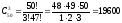
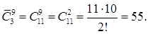

Число сочетаний без повторений
В комбинаторике сочетанием из n по m называется набор m элементов, выбранных из данного множества, содержащего n различных элементов. Наборы, отличающиеся только порядком следования элементов (но не составом), считаются одинаковыми, этим сочетания отличаются от размещений.
Пример. Во взводе 5 сержантов и 50 солдат. Сколькими способами можно составить наряд из одного сержанта и трёх солдат.
Решение. Одного сержанта из пяти можно выбрать 5-ю разными способами. Для любого из этих способов выбора сержанта трёх солдат (порядок тройки не важен) из 50-ти можно выбрать  числом способов. Тогда по правилу произведения весь наряд, то есть одного сержанта и трёх солдат, можно выбрать 5 * 19600 = 98000 способами.

C =
Число сочетаний с повторениями
Сочетанием с повторениями называются наборы, в которых каждый элемент может участвовать несколько раз. В частности, количество монотонных неубывающих функций из множества {1, 2, ..., m} в множество {1, 2, ..., n} равно числу сочетаний с повторениями из n по m.
Пример 12.1. В кондитерской имеется 3 вида пирожных. Сколькими способами можно купить 9 пирожных?
Решение. В задаче требуется найти число всевозможных групп по 9 элементов, которые можно составить из данных трех различных элементов, причем указанные элементы в каждой группе могут повторяться, а сами группы отличаются друг от друга хотя бы одним элементом. Это задача на отыскание числа сочетаний с повторениями из трех элементов по девять. Следовательно,
C̄ =